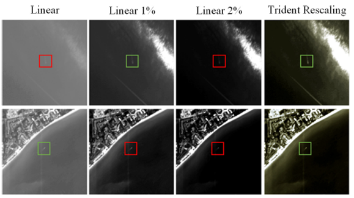

Space Intelligent Computing Laboratory:
The main research directions include remote sensing image fusion, object detection, change detection and so on.
Publications (Selected):
|
|
- UPanGAN: Unsupervised pansharpening based on the spectral and spatial loss constrained Generative Adversarial Network
Qi-zhi Xu, Yuan Li*, Jinyan Nie, Qingjie Liu, Mengyao Guo
Information Fusion, 2022
[PDF]
[BibTeX]
@article{xu2023upangan,
title={UPanGAN: Unsupervised pansharpening based on the spectral and spatial loss constrained Generative Adversarial Network},
author={Xu, Qizhi and Li, Yuan and Nie, Jinyan and Liu, Qingjie and Guo, Mengyao},
journal={Information Fusion},
volume={91},
pages={31--46},
year={2023},
publisher={Elsevier}
}
|
|
|
- COCO-Net: A Dual-Supervised Network With Unified ROI-Loss for Low-Resolution Ship Detection From Optical Satellite Image Sequences
Qi-zhi Xu, Yuan Li*, Mingjin Zhang, Wei Li
IEEE Transactions on Geoscience and Remote Sensing, 2022
[PDF]
[BibTeX]
@article{xu2022coco,
title={COCO-Net: A Dual-Supervised Network With Unified ROI-Loss for Low-Resolution Ship Detection From Optical Satellite Image Sequences},
author={Xu, Qizhi and Li, Yuan and Zhang, Mingjin and Li, Wei},
journal={IEEE Transactions on Geoscience and Remote Sensing},
volume={60},
pages={1--15},
year={2022},
publisher={IEEE}
}
|
|
 |
- LMO-YOLO: A Ship Detection Model for Low-Resolution Optical Satellite Imagery
Qizhi Xu, Yuan Li, Zhenwei Shi
IEEE Journal of Selected Topics in Applied Earth Observations and Remote Sensing, 2022
[PDF]
[BibTeX]
@article{xu2022lmo,
title={LMO-YOLO: A Ship Detection Model for Low-Resolution Optical Satellite Imagery},
author={Xu, Qizhi and Li, Yuan and Shi, Zhenwei},
journal={IEEE Journal of Selected Topics in Applied Earth Observations and Remote Sensing},
volume={15},
pages={4117--4131},
year={2022},
publisher={IEEE}
}
|
|
|
- Unsupervised Hyperspectral Pansharpening by Ratio Estimation and Residual Attention Network
Jinyan Nie, Qizhi Xu*,Junjun Pan
IEEE Geoscience and Remote Sensing Letters, 2022
[PDF]
[BibTeX]
@article{nie2022unsupervised,
title={Unsupervised hyperspectral pansharpening by ratio estimation and residual attention network},
author={Nie, Jinyan and Xu, Qizhi and Pan, Junjun},
journal={IEEE Geoscience and Remote Sensing Letters},
volume={19},
pages={1--5},
year={2022},
publisher={IEEE}
}
|
|
|
- A robust multimodal remote sensing image registration method and system using steerable filters with first-and second-order gradients
Yuanxin Ye, Bai Zhu, Tengfeng Tang, Chao Yang, Qizhi Xu, Guo Zhang
ISPRS Journal of Photogrammetry and Remote Sensing, 2022
[PDF]
[BibTeX]
@article{ye2022robust,
title={A robust multimodal remote sensing image registration method and system using steerable filters with first-and second-order gradients},
author={Ye, Yuanxin and Zhu, Bai and Tang, Tengfeng and Yang, Chao and Xu, Qizhi and Zhang, Guo},
journal={ISPRS Journal of Photogrammetry and Remote Sensing},
volume={188},
pages={331--350},
year={2022},
publisher={Elsevier}
}
|
 |
- An Unsupervised SAR and Optical Image Fusion Network Based on Structure-Texture Decomposition
Yuanxin Ye, Wanchun Liu, Liang Zhou, Tao Peng, Qizhi Xu
IEEE Geoscience and Remote Sensing Letters, 2022
[PDF]
[BibTeX]
@article{ye2022unsupervised,
title={An Unsupervised SAR and Optical Image Fusion Network Based on Structure-Texture Decomposition},
author={Ye, Yuanxin and Liu, Wanchun and Zhou, Liang and Peng, Tao and Xu, Qizhi},
journal={IEEE Geoscience and Remote Sensing Letters},
volume={19},
pages={1--5},
year={2022},
publisher={IEEE}
}
|
|
|
- PSGAN: A generative adversarial network for remote sensing image pan-sharpening
Qingjie Liu, Huanyu Zhou, Qizhi Xu, Xiangyu Liu, Yunhong Wang
IEEE Geoscience and Remote Sensing Letters, 2020
[PDF]
[BibTeX]
@article{liu2020psgan,
title={PSGAN: A generative adversarial network for remote sensing image pan-sharpening},
author={Liu, Qingjie and Zhou, Huanyu and Xu, Qizhi and Liu, Xiangyu and Wang, Yunhong},
journal={IEEE Transactions on Geoscience and Remote Sensing},
volume={59},
number={12},
pages={10227--10242},
year={2020},
publisher={IEEE}
}
|
Academic Activities:
Peer-Reviewer:
IEEE TGRS, IEEE JSTARS, IEEE TNNLS, IEEE JSTSP, IEEE GRSL
ISPRS Journal of Photogrammetry and Remote Sensing, Information Fusion, etc.